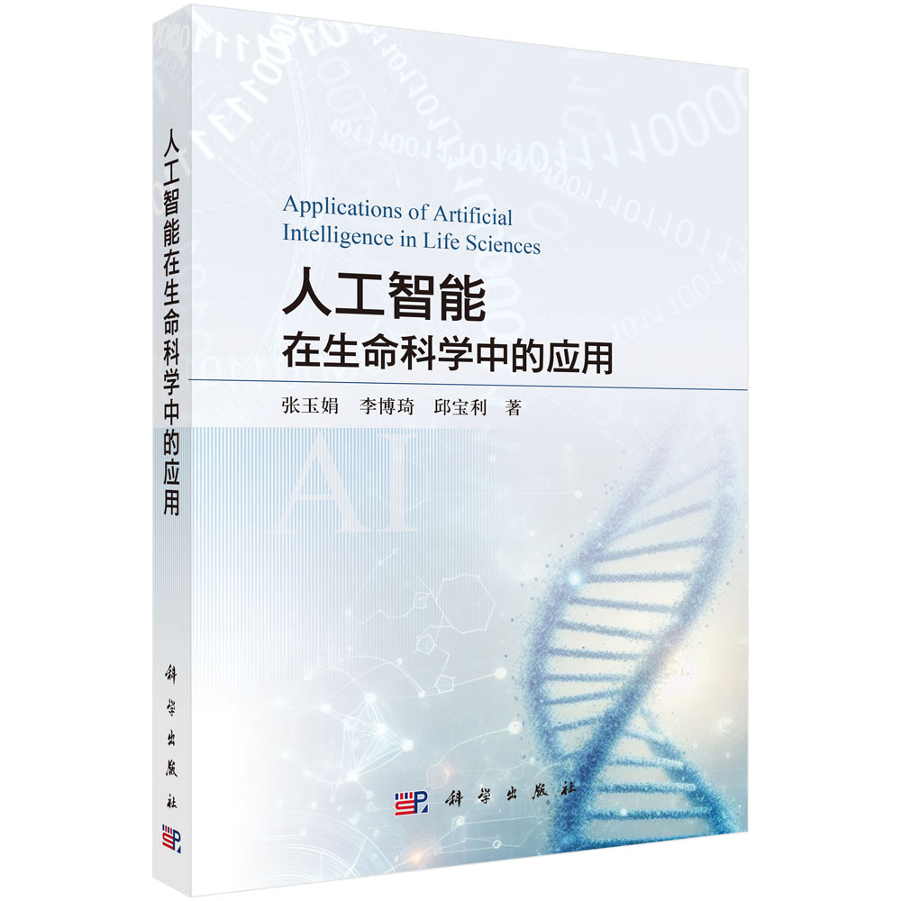
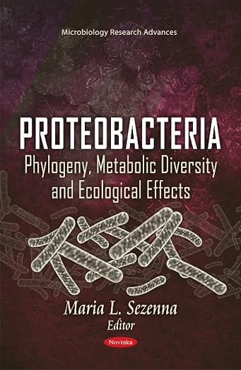

Publications
Books, Patents and Publications
Books and chapters

Yu-Juan Zhang, Boqi Li, Baoli Qiu. Applications of Artificial Intelligence in Life Sciences. Science Press, 2026.

Zhang YJ; Wen JF, Proteobacteria and the endosymbiotic origin of mitochondrion in “Proteobacteria: Phylogeny, Metabolic Diversity and Ecological Effects”, Nova Science Publishers, 2011.
Patents and Software Copyrights
- Intelligent Assisted Ubiquitinated Protein Detection Platform V1.0 (Software Copyright). 2025. Registration No. 2025SR0582782.
- A Computational Method for Basic Stoichiometric Genomic Analysis (Invention Patent). Application No. 202110905333.9.
- A Joint Analysis Method for Stoichiometric Genomes and Genome Annotation Files (Invention Patent). Application No. 202110906004.6.
- A Batch Analysis Method for Multi-species Stoichiometric Genomes (Invention Patent). Application No. 2021109053.
- A High-throughput Method for Multi-species Stoichiometric Proteome Analysis (Invention Patent). Application No. 202210259556X.
- A High-throughput Method for Multi-species Stoichiometric Transcriptome Analysis (Invention Patent). Application No. 202210159540.
Publications
(*Equally contributed, *Corresponding)
2026
- Jinzhou Wu, Donglin He, Xin Li, Rui Wang, Yu-Juan Zhang*. A multi-view collaborative heterogeneous graph neural network with semantic- and relation-aware for drug-disease association prediction. Engineering Applications of Artificial Intelligence. 2026.
2025
- Yawen Sun, Rui Wang, Zeyu Luo, Lejia Tan, Junhao Liu, Ruimeng Li, Dongqing Wei, Yu-Juan Zhang*. ESM2_AMP: An Interpretable Framework for Protein-protein Interactions Prediction and Biological Mechanism Discovery. Briefings in Bioinformatics. 2025.
- Junhao Liu, Zeyu Luo, Yawen Sun, Rui Wang, Xin Li, XinYun Ye, Dong-Qing Wei, Yu-Juan Zhang. ProtLoc-Mex1: Interpretable Analysis of Amino Acids Sequence Chemical Feature and GO Annotations for Predicting Protein Subcellular Localization. J. Comput. Biophys. Chem. 2025.
- Yu-Juan Zhang, Yawen Sun, Chen Meng, Mingxing Ye, Donglin He, Zhen Tian Yan, Bin Chen. Relationship between the symbiotic microbial community and insecticide resistance in wild Anopheles sinensis. Acta Entomologica Sinica. 2025, 68(5): 626-637.
2024
- Junhao Liu, Zeyu Luo, Rui Wang, Xin Li, Yawen Sun, Zongqing Chen, Yu-Juan Zhang*. EUP: Enhanced Cross-species Prediction of Ubiquitination Sites via a Conditional Variational Autoencoder Network Based on ESM2. PLOS Computational Biology. 2024.
- Zeyu Luo, Rui Wang, Yawen Sun, Junhao Liu, Zongqing Chen*, Yu-Juan Zhang*. Interpretable Feature Extraction and Dimensionality Reduction in ESM2 for Protein Localization Prediction. Briefings in Bioinformatics. 2024.
- Xiang-Ying Li, Feng-Ling Si, Xiao-Xiao Zhang, Yu-Juan Zhang, Bin Chen. Characteristics of Trypsin genes and their roles in insecticide resistance in the malaria vector Anopheles sinensis. Pesticide Biochemistry and Physiology. 2024.
- Chen Meng, Zhentian Yan, Liang Qiao, Fengling Si, Shulin He, Xinyue Zhang, Yuting Luo, Bin Chen, Yu-Juan Zhang*. Bulked segregant analysis sequencing (BSA-seq) reveal candidate genes associated with pyrethroid resistance in Wuxi strain of Anopheles sinensis. 2024.
2023
- Yu-Juan Zhang, Zeyu Luo, Yawen Sun, Junhao Liu, Zongqing Chen. From Beasts to Bytes: Revolutionizing Zoological Research with Artificial Intelligence. Zoological Research. 2023. 44(6):1115-1131.
- Xin Qiu, Chen Meng, Wenbin Wang, Bin Chen, Yu-Juan Zhang. Relationship between the symbiotic microbial community and insecticide resistance in wild Anopheles sinensis. Acta Entomologica Sinica. 2023, 66(9): 1183-1191.
- Man Zhang, Chengxu Zhu, Zeyu Luo, Junhao Liu, Yawen Sun, Muhammad Tahir Khan, Dong-Qing Wei, Yu-Juan Zhang*. Exploring key proteins, pathways and oxygen usage bias of proteins and metabolites in melanoma. Journal of Computational Biophysics and Chemistry. 2023.
- Yang Lan, Yimiao Liang, Xu Xiao, Yun Shi, Mengli Zhu, Chen Meng, Shujuan Yang, Muhammad Tahir Khan, Yu-Juan Zhang*. Stoichioproteomics study of differentially expressed proteins and pathways in head and neck cancer. Brazilian Journal of Biology. 2023.
- Zhu ML, Yu-Juan Zhang. Gene Expression Profiling Analysis of Escherichia coli under the Conditions of Glucose and Glycerol Carbon Source Culture. Journal of Chongqing Normal University. 2023.
2022
- Shi Yun, He Ping, Tu Xudong, Yu-Juan Zhang. Tandem Mass Tags Quantitative Proteomics Analysis of Gastric Epithelial Cell Line GES-1 Cultured in Different pH Environments. Genomics and Applied Biology. 2022.
- Yu-Juan Zhang*, Muhammad Tahir Khan*, Madeeha Shahzad Lodhi, et al. Novel Mutations in Putative Nicotinic Acid Phosphoribosyltransferases of Mycobacterium tuberculosis. Polymers. 2022, 14(8), 1623.
- Madeeha Shahzad Lodhi, et al., Yu-Juan Zhang, Kejie Mou. A Novel Method of Magnetic Nanoparticles Functionalized with Anti-Folate Receptor Antibody. Molecules. 2022. 27(1):261.
2021
- Yu-Juan Zhang, Yang Lan, Bin Chen. ASDB: A comprehensive omics database for Anopheles sinensis. Genomics. 2021, 3(113): 976-982.
- Aman Chandra Kaushik, et al., Yu-Juan Zhang, Dong-Qing Wei. A-CaMP: a tool for anti-cancer and antimicrobial peptide generation. J Biomol Struct Dyn. 2021. 39(1):285-293.
- Khan, M. Tahir, et al., Yu-Juan Zhang, Wei, D. Q. CYP1A2, 2A13, and 3A4 network and interaction with aflatoxin B-1. World Mycotoxin Journal. 2021, 14(2): 179-189.
- Muhammad Tahir Khan, et al., Yu-Juan Zhang, et al. Insight into the drug resistance whole genome of Mycobacterium tuberculosis isolates from Khyber Pakhtunkhwa, Pakistan. Infect Genet Evol. 2021.
2020
- Khan MT, et al., Yu-Juan Zhang, Wei DQ. Marine natural compounds as potents inhibitors against the main protease of SARS-CoV-2. J Biomol Struct Dyn. 2020.
2019
- Khan MT, et al., Yu-Juan Zhang, Wei DQ. Marine Natural Products and Drug Resistance in Latent Tuberculosis. Mar Drugs. 2019, 17(10).
- Zuo XY, Li B, Zhu CX, Yan ZW, Li M, Wang XY, Yu-Juan Zhang*. Stoichiogenomics reveal oxygen usage bias, key proteins and pathways associated with stomach cancer. Scientific Reports. 2019.
- Yongqin Yin, Bo Li, et al., Yu-Juan Zhang*. Stoichioproteomics reveal oxygen usage bias, key proteins and pathways in glioma. BMC Med Genomics. 2019.
- XIAO Xu, et al., Yu-Juan Zhang. Analysis of Competitiveness in Entomology Research in China Based on NSFC in 2009-2016. Fudan University Journal. 2019.
- Wang XT, Yu-Juan Zhang, Qiao L, Chen B*. Comparative analyses of simple sequence repeats (SSRs) in 23 mosquito species genomes. Insect Science. 2019.
- Lan Y, X He, Yu-Juan Zhang*. Application of R language graphics in biological research. Journal of East China Normal University. 2019.
- Sun L, et al., Yu-Juan Zhang, Chen B. The complete mt genomes of Lutzia halifaxia, Lt. fuscanus and Culex pallidothorax. Parasites & Vectors. 2019.
2018
- Yu-Juan Zhang, Zhu C, Ding Y, et al. Subcellular stoichiogenomics reveal cell evolution and electrostatic interaction mechanisms in cytoskeleton. BMC Genomics. 2018. 19(1): 469.
- Yong Zhou, et al., Yu-Juan Zhang, Bin Chen. UDP-glycosyltransferase genes and their association with pyrethroid resistance in Anopheles sinensis. Malaria Journal. 2018.
- Yi-Ran Ding, Bo Li, Yu-Juan Zhang, et al. Complete mitogenome of Anopheles sinensis and mitochondrial insertion segments. Plos One. 2018.
2017
- Lan Y, Hu JT, Yu-Juan Zhang*. Research progress of stoichiogenomics. Hereditas (Beijing). 2017. 39(2):89-97.
2016
- Wang XT, Yu-Juan Zhang, He X, Mei T, Chen B. Identification and distribution of microsatellites in the whole genome of Anopheles sinensis. Acta Entomologica Sinica. 2016.
- You-Jin Hao, Yu-Juan Zhang, et al. Insight into the possible mechanism of the summer diapause of Delia antiqua through digital gene expression analysis. Insect Science. 2016.
- Xiu He, et al., Yu-Juan Zhang, Bin Chen. Genome-wide identification and characterization of odorant-binding protein genes in Anopheles sinensis. Insect Sci. 2016.
2015
- Guo Q, Hao Y-J, Li Y, Yu-Juan Zhang, et al. Gene cloning and enzymatic activities related to trehalose metabolism during diapause of Delia antiqua. Gene. 2015.
- YAN Zhengwen, Yu-Juan Zhang, ZHOU Yong, Chen B. Identification and Bioinformatic Analysis of the CYP4G17 Gene in Anopheles sinensis. Journal of Chongqing Normal University. 2015.
2014
- Chen B, Yu-Juan Zhang, et al. De novo transcriptome sequencing and sequence analysis of the malaria vector Anopheles sinensis. Parasites & Vectors. 2014.
- Yu-Juan Zhang, Hao YJ, Si FL, et al. The de novo transcriptome and its analysis of the worldwide vegetable pest, Delia antiqua. G3: Genes, Genomes, Genetics. 2014.
- Yu-Juan Zhang, Yang CL, Hao YJ, Chen B, Wen JF. Macroevolutionary trends of atomic composition in eukaryotic and prokaryotic proteins. Gene. 2014.
- Tang Y, Qiao L, Yu-Juan Zhang, et al. Identification and bioinformatics analysis of genes of the CYP6Y subfamily in Anopheles sinensis. Acta Entomologica Sinica. 2014.
- Che YF, Yu-Juan Zhang, et al. Bioinformatic identification and characterization of CYP6P5 gene in Anopheles sinensis. Chin J Vector BioJ & Control. 2014.
2013
- Yu-Juan Zhang*, Li JJ, Hao YJ, Chen B. Charged amino acid frequencies of proteins over macroevolutionary time scale. Engineering. 2013.
- Zhang NX, Yu-Juan Zhang, Yu G, Chen B. Structure characteristics of the mitochondrial genomes of Diptera. Acta Entomologica Sinica. 2013.
- Li Y, Hao YJ, Yu-Juan Zhang, Si FL, Chen B. Cloning and expression of trehalose-6-phophate synthase gene from Delia antiqua. Acta Entomologica Sinica. 2013.
- Shi YY, Che YF, Yu-Juan Zhang*. Protein transport in secondary plastids. Chemistry of Life. 2013.
2012
- Li Y, Gao Y, Yu-Juan Zhang, Hao YJ. Comparison of lipogenesis capacity of Grass Carp preadipocyte from different anatomical sites. Journal of Animal and Veterinary Advances. 2012.
- Wei HH, Yu-Juan Zhang, Chen B. Cloning, expression and bioinformatic analysis of dorsal Gene in Delia antiqua. Plant Diseases and Pests. 2012.
- Yu-Juan Zhang*, Tan H. Diversity of protist plastids (chloroplasts) and its causation analyses. Chemistry of Life. 2012.
- Yu-Juan Zhang, Wen JF. Research progresses of YidC/Oxa/Alb3 protein family. Chemistry of Life. 2012.
2011
- Yu-Juan Zhang, Wen JF. Proteobacteria and the endosymbiotic origin of mitochondrion. In: Maria L. Sezenna Editors. Nova Science Publisher. 2011. P57-71.
- Yu-Juan Zhang, Zhang YQ, Wen JF. Recent progresses of protein translocation into chloroplast and mitochondrion in plants. Chemistry of Life. 2011.
2009
- Yu-Juan Zhang, Tian HF, Wen JF. The evolution of YidC/Oxa/Alb3 family in the three domains of life: a phylogenomic analysis. BMC Evolutionary Biology. 2009.